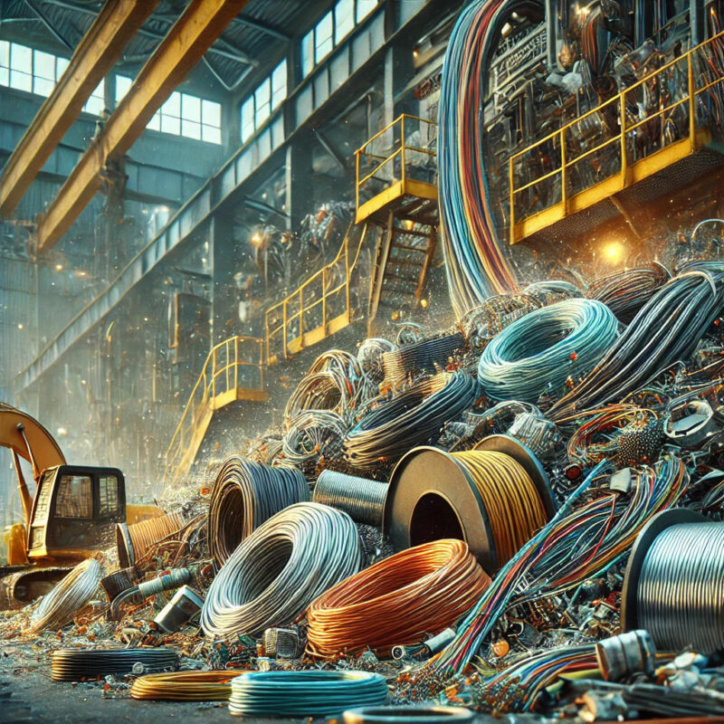
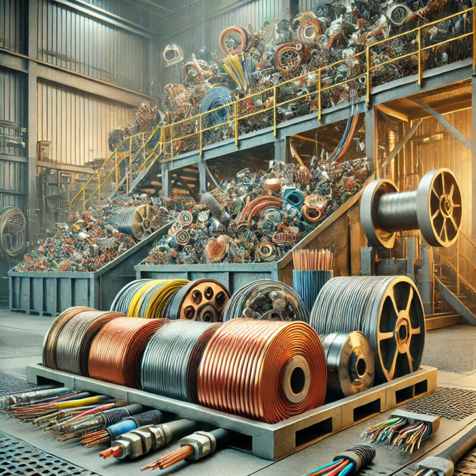
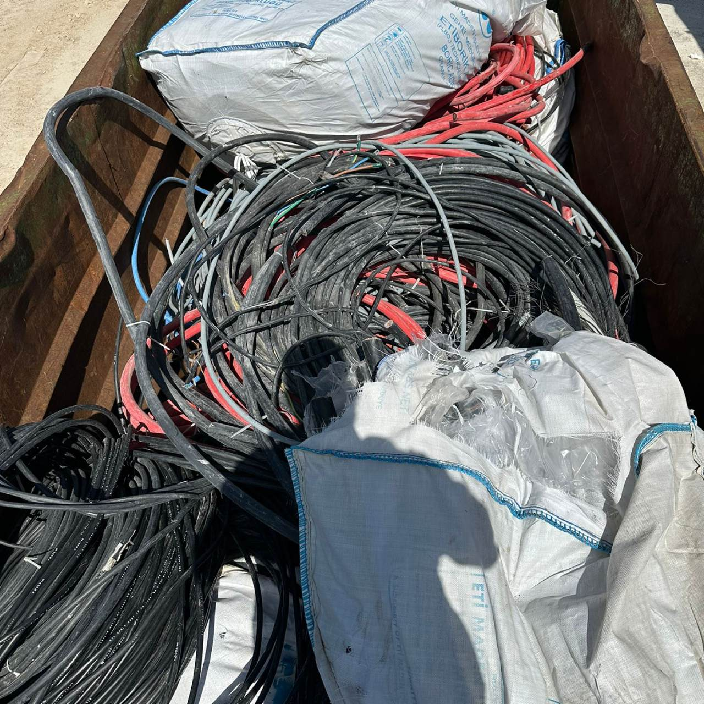
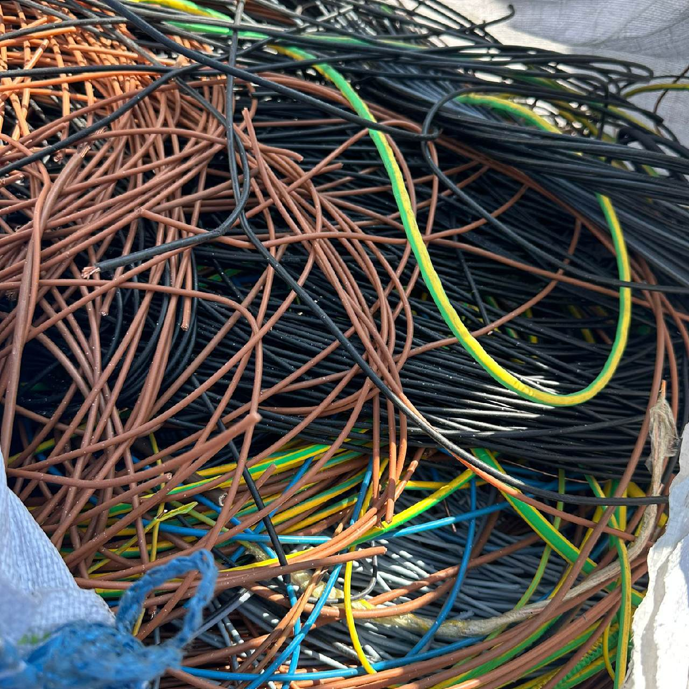
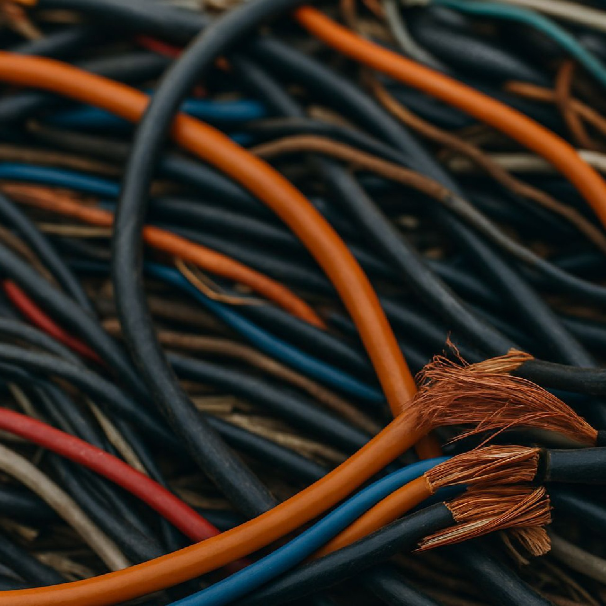
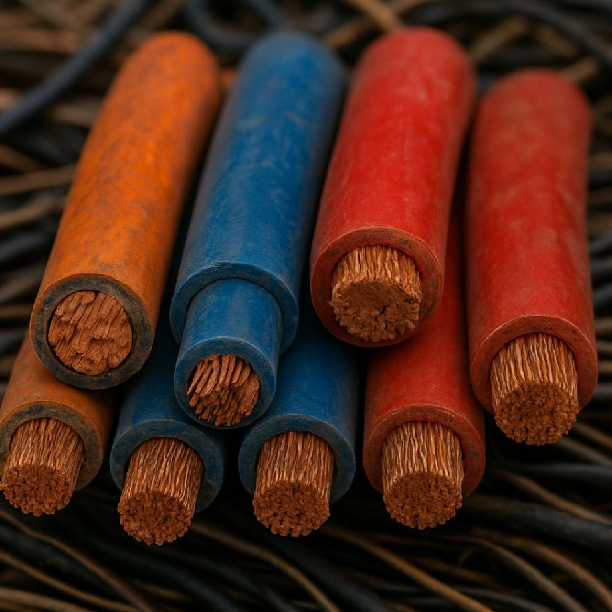
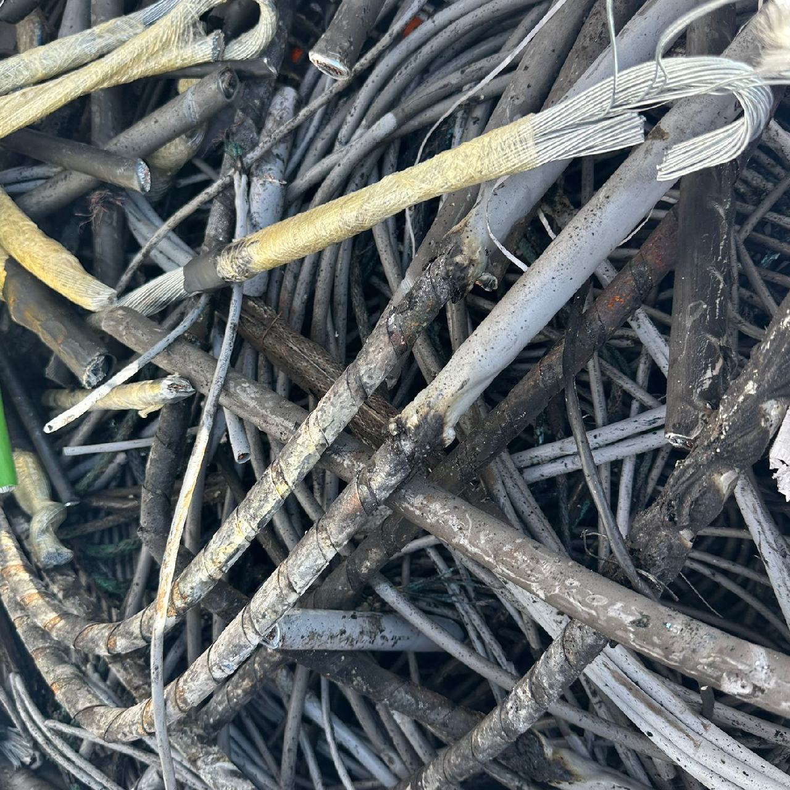
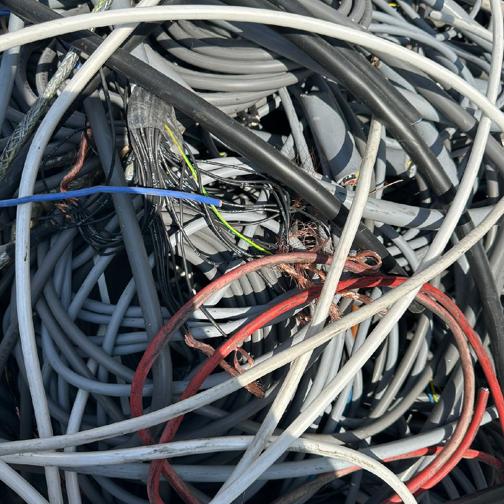
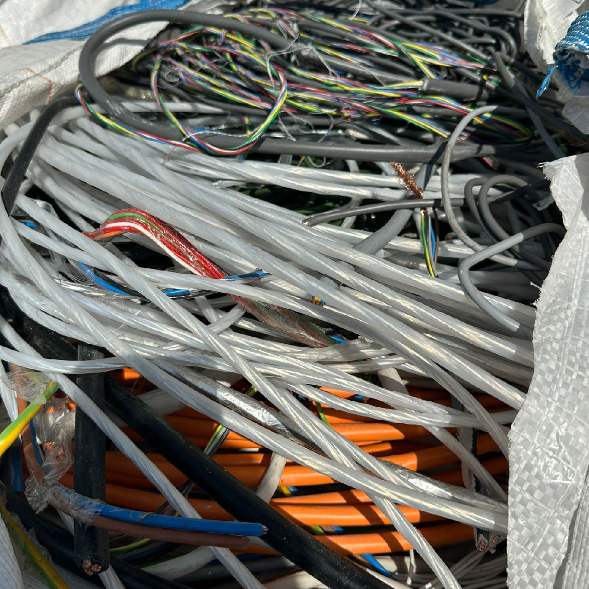
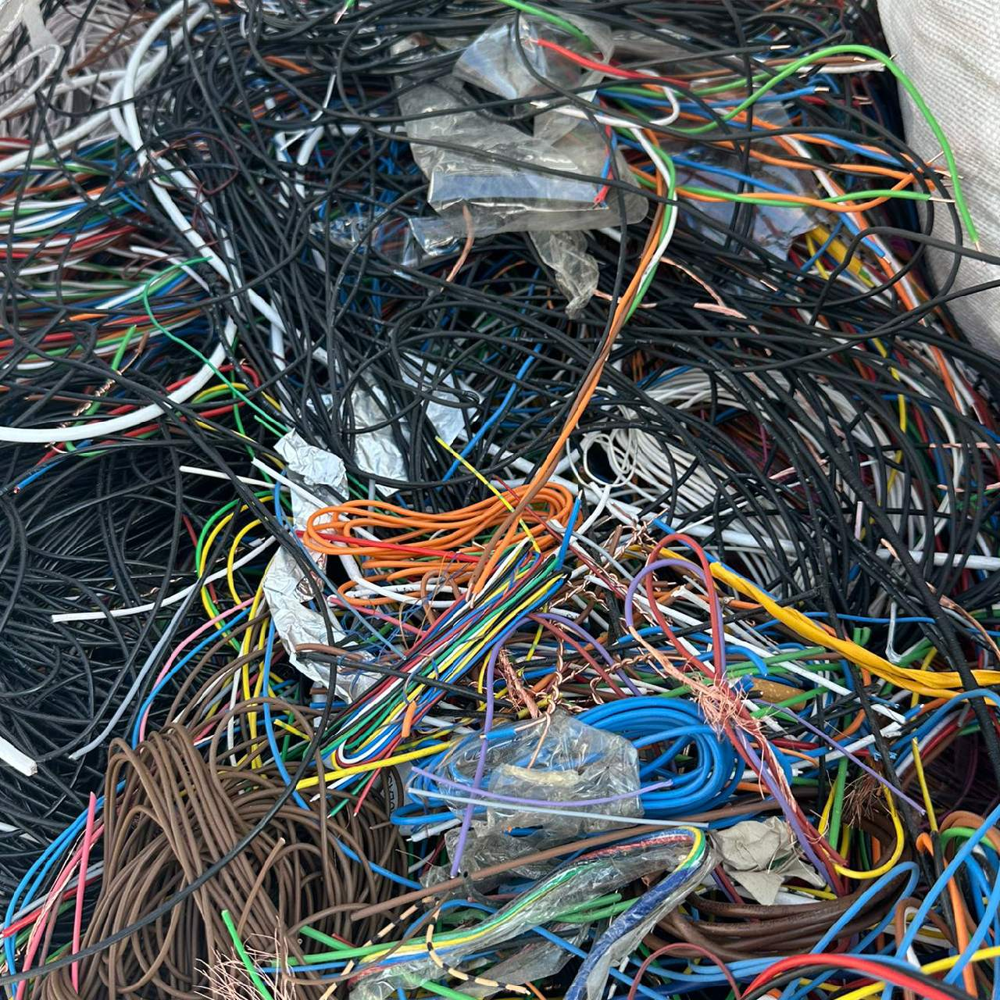

Hurda Kablo Fiyatları
Kablo hurda fiyatları, geri dönüşüm sektöründe önemli bir yere sahiptir. Hurda kablolar, içerdikleri değerli metaller sayesinde hem ekonomik hem de çevresel faydalar sunar. Kablo hurda fiyatlarını canlı olarak takip etmek isterseniz, kablohurdafiyatlari.com isimli web sitemiz üzerinden anlık ve güncel olarak hurda kablo fiyatları takip edilebilir. Altta gördüğünüz tabloda birçok kablo hurda fiyatı yer almaktadır. Dilerseniz günlük ve haftalık olarak dilerseniz de saatlik olarak fiyatları takip edebilirsiniz.


Hurda Kablo Fiyatları Ne Kadar?
Altta yer alan hurda fiyatları en son tarihinde güncellenmiştir.
| Hurda Türü | KG Fiyatı |
|---|---|
| Soyma Kablo | 567.70 TL |
| Soyulmamış Kablo | 279.88 TL |
| Karışık Kablo | 160.96 TL |
| Kırkambar Karışık Kablo | 165.77 TL |
| NYA Kablo | 429.79 TL |
| Fare Yemez Kablo | 218.82 TL |
| PTT Kablo İçi (Deşe) | 400.96 TL |
| PTT Kablo İçi Yağlı (Deşe) | 320.00 TL |
| Yer Altı Enerji Kablosu | 261.89 TL |
| Dalgıç Pompa Kablosu | 494.72 TL |
| Antigron Kablo | 138.31 TL |
| %30 Bakırlı Kablo | 210.56 TL |
| %40 Bakırlı Kablo | 247.59 TL |
| %50 Bakırlı Kablo | 290.54 TL |
| Şantiye Kablosu (Enerji ve Tesisat Karışık) | 305.17 TL |
| Çelik Zırh ve Çelik İçli Kablo | 203.50 TL |
Hurda Kablo Fiyatları Hangi İllerde Geçerli?
| Adana | Adıyaman | Afyonkarahisar | Ağrı | Aksaray | Amasya |
| Ankara | Antalya | Ardahan | Artvin | Aydın | Balıkesir |
| Bartın | Batman | Bayburt | Bilecik | Bingöl | Bitlis |
| Bolu | Burdur | Bursa | Çanakkale | Çankırı | Çorum |
| Denizli | Diyarbakır | Düzce | Edirne | Elazığ | Erzincan |
| Erzurum | Eskişehir | Gaziantep | Giresun | Gümüşhane | Hakkari |
| Hatay | Iğdır | Isparta | İstanbul | İzmir | Kahramanmaraş |
| Karabük | Karaman | Kars | Kastamonu | Kayseri | Kırıkkale |
| Kırklareli | Kırşehir | Kilis | Kocaeli | Konya | Kütahya |
| Malatya | Manisa | Mardin | Mersin | Muğla | Muş |
| Nevşehir | Niğde | Ordu | Osmaniye | Rize | Sakarya |
| Samsun | Siirt | Sinop | Sivas | Şanlıurfa | Şırnak |
| Tekirdağ | Tokat | Trabzon | Tunceli | Uşak | Van |
| Yalova | Yozgat | Zonguldak |
Hurda Kablo Türleri Nelerdir?
| Bakır Kablo | Alüminyum Kablo | Kablo Plastiği | Elektrik Kablosu | Tek Damar Kablo |
| Çelik İçli Kablo | İzoleli Kablo | Nikel Kaplı Kablo | Hes Kablo | Emaye Kaplı Kablo |
| Kabuklu Kablo | Zayıf Akım Kablo | 2×1,5 Kablo | 3×1,5 Kablo | 3×2,5 Kablo |
| Alpek Kablo | NYA Kablo | NYAF Kablo | NYM Kablo | NYY Kablo |
| NYFGBY Kablo | Anten Kablosu | Ethernet Kablosu | İnternet Kablosu | Cat 6 Kablosu |
| Telefon Kablosu | Kordon Kablosu | Kamera Kablosu | Diafon Kablosu | Fiber Optik Kablo |
Elektrik ve iletişim altyapısının temel taşları olan kablolar, zamanla eskir, hasar görür veya teknolojik olarak yetersiz kalarak kullanım ömrünü tamamlar. Bu noktada “hurda kablo” olarak nitelendirilen bu materyaller, içerdikleri değerli metaller sayesinde geri dönüşüm sektörünün önemli bir hammaddesi haline gelir. Bakır ve alüminyum gibi metallerin yanı sıra çeşitli plastik ve yalıtım malzemelerini de barındıran bu kablolar, türlerine ve yapılarına göre farklılık gösterir. Her bir kablo türünün kendine has özellikleri, kullanım alanları ve dolayısıyla hurda değeri bulunur.
Aşağıda, hurda piyasasında sıkça karşılaşılan bazı önemli kablo türleri ve bu türlerin ne anlama geldiği detaylı bir şekilde incelenmiştir.
Tek Damar Kalın İç Tesisat Kablosu Nedir?
Tek damar kalın iç tesisat kablosu, genellikle binaların ana elektrik hatlarında, panolarda ve buatlarda kullanılan, tek bir kalın bakır iletkenden oluşan bir kablo türüdür. Yapısı gereği, yüksek akım taşıma kapasitesine sahiptir ve bu nedenle priz hatları, aydınlatma sortileri ve daha güçlü elektrikli cihazların beslenmesi gibi kritik görevler üstlenir. Dış yüzeyi, genellikle PVC (Polivinil Klorür) gibi yalıtkan bir malzeme ile kaplıdır. Bu yalıtkan katman, hem elektriksel güvenliği sağlar hem de kabloyu dış etkenlere karşı korur. Hurdacılık sektöründe bu kablolar, içerdikleri yoğun ve saf bakır nedeniyle oldukça değerlidir. Geri dönüşüm sürecinde dışındaki plastik kılıf soyularak yüksek kalitede bakır elde edilir.
Antigron Kablo Nedir?
Antigron kablo, bir diğer adıyla NYM kablo, özellikle nemli ve ıslak mekanlarda kullanılmak üzere tasarlanmış bir alçak gerilim kablosudur. Yapısında bir veya birden fazla bakır iletken bulunur ve bu iletkenler PVC bazlı özel bir termoplastik malzeme ile izole edilmiştir. Ayrıca tüm damarları bir arada tutan ve ekstra koruma sağlayan bir dış kılıfa sahiptir. Bu özellikleri sayesinde sıva altı ve sıva üstü sabit tesisatlarda güvenle kullanılabilir. Ancak doğrudan toprak altına döşenmesi için uygun değildir. Yangın ve patlama riski taşıyan işletmelerde, depolarda ve endüstriyel tesislerde sıkça tercih edilen bir kablo türüdür. Hurda olarak değerlendirildiğinde, içerdiği bakır iletkenler ve dış kılıfı ayrı ayrı geri dönüştürülebilir.
TTR Kablo Nedir?
TTR kablo, içinde çok sayıda ince bakır telin bir araya getirilmesiyle oluşturulmuş ve PVC ile kaplanmış iletkenlerin, yine bir PVC dış kılıf içerisinde toplandığı esnek bir kablo türüdür. Bu yapısı sayesinde “çok telli kablo” olarak da bilinir. Esnekliği, en belirgin özelliklerinden biridir ve bu sayede hareketli cihazların bağlantılarında, uzatma kablolarında ve mekanik zorlamanın az olduğu ıslak ve nemli ortamlarda yaygın olarak kullanılır. TTR kablolar, ev aletlerinden şantiyelerdeki ek tesisatlara kadar geniş bir kullanım alanına sahiptir. Hurda olarak, içerdiği ince bakır teller ve plastik kısımlar geri dönüşüm sürecine dahil edilir.
Yer Altı Enerji Kablosu Nedir?
Yer altı enerji kablosu, elektrik enerjisinin yerin altına döşenerek iletilmesini sağlayan, zorlu çevre koşullarına karşı özel olarak tasarlanmış güç kablolarıdır. Genellikle şehirlerde, endüstriyel alanlarda ve enerji nakil hatlarında, havai hatların estetik ve güvenlik açısından uygun olmadığı durumlarda tercih edilir. Bu kablolar, su, nem, toprak basıncı ve kimyasal etkilere karşı dayanıklı olmaları için çok katmanlı bir yapıya sahiptir. İletken olarak bakır veya alüminyum kullanılır. Dış katmanlarında ise mekanik koruma sağlayan çelik zırh gibi ek önlemler bulunabilir. Hurdaya ayrıldıklarında, içerdikleri yüksek miktardaki bakır veya alüminyum ve varsa çelik zırh gibi bileşenleri nedeniyle ekonomik olarak oldukça değerlidirler.
NYA Kablo Nedir?
NYA kablo, alçak gerilim tesisatlarında kullanılan, tek damarlı, tek veya çok telli bakır iletkenli ve PVC izoleli bir kablo çeşididir. Genellikle bina içi tesisatlarda, kapalı ve kuru mekanlarda, dağıtım panolarında ve sıva altı boru içerisinde kullanılır. Esnek yapısı sayesinde montaj kolaylığı sağlar. Farklı renk seçenekleri (faz için kahverengi, siyah, gri; nötr için mavi; toprak için sarı-yeşil) sayesinde tesisat içerisinde hatların kolayca ayırt edilmesine olanak tanır. Kılıfsız bir yapıya sahiptir, bu nedenle mekanik darbelere karşı korunması için genellikle boru içinden geçirilerek kullanılır. Hurda olarak, kolayca işlenebilen saf bakır içeriğiyle bilinir.
Karışık (Kırkambar) Kablo Nedir?
Karışık veya halk arasındaki adıyla “kırkambar” kablo, belirli bir türe ayrılmamış, farklı cins ve kalınlıklardaki hurda kabloların bir arada bulunduğu bir hurda sınıfını ifade eder. Bu karışımın içinde TTR, antigron, tesisat, telefon gibi çeşitli kablo türleri bulunabilir. Kırkambar kablonun hurda değeri, içindeki değerli metal (genellikle bakır) oranının tam olarak bilinememesi nedeniyle genellikle diğer, sınıflandırılmış kablo hurdalarına göre daha değişkendir. Bu nedenle geri dönüşüm tesislerinde, bu kablolar genellikle türlerine göre ayrıştırıldıktan sonra işleme alınır. Bu ayrıştırma işlemi, elde edilecek bakır yüzdesinin hesaplanabilmesi ve fiyatlandırmanın doğru yapılabilmesi için gereklidir.
Soyulmuş Bakır Kablo Nedir?
Soyulmuş bakır kablo, adından da anlaşılacağı gibi, üzerindeki plastik veya kauçuk gibi yalıtkan kaplaması tamamen çıkarılmış, geriye sadece saf bakır iletkenin kaldığı hurda türüdür. Bu işlem genellikle hurda kabloların geri dönüştürülmeden önce değerini artırmak için yapılır. Soyulmuş bakır, herhangi bir yabancı madde içermediği için hurda piyasasında en yüksek fiyata sahip bakır türlerinden biridir. Elektrik ve inşaat sektörlerinden elde edilen kabloların soyulmasıyla elde edilen bu malzeme, geri dönüşüm sürecinde doğrudan ergitilerek yeni ürünlerin imalatında kullanılmaya hazırdır. Bu durum, hem enerji tasarrufu sağlar hem de geri dönüşüm sürecini basitleştirir.
Yanık Bakır Kablo Nedir?
Yanık bakır kablo, genellikle hurda kabloların içindeki bakırı elde etmek için yalıtkan plastik kısımlarının yakılması sonucu ortaya çıkan bir hurda türüdür. Bu işlem sırasında bakır, yüksek ısıya maruz kaldığı için yüzeyinde bir oksit tabakası oluşur ve parlaklığını kaybeder. Bu durum, bakırın saflığını bir miktar düşürür. Geçmişte sıkça kullanılan bu yöntem, ortaya çıkan zehirli gazlar nedeniyle çevre ve insan sağlığı için son derece zararlıdır. Günümüzde modern geri dönüşüm tesisleri, kabloları yakmak yerine mekanik soyma ve kırma yöntemlerini kullanmaktadır. Yanık bakır, saflık derecesi soyulmuş bakıra göre daha düşük olduğu için hurda piyasasında daha düşük bir fiyattan işlem görür.
Telefon Kabloları Nedir?
Telefon kabloları, ses ve veri iletimi için kullanılan, genellikle içinde birden fazla ince bakır tel bulunan iletişim kablolarıdır. Özellikle eski tip PTT (Posta, Telgraf ve Telefon) kabloları, telekomünikasyon altyapısının temelini oluşturmuştur. Teknolojinin ilerlemesiyle birlikte fiber optik gibi daha modern alternatiflerin yaygınlaşması, bu bakır içerikli kabloların hurdaya ayrılmasına neden olmuştur. Hurda telefon kabloları, içerdikleri çok sayıda ince bakır tel nedeniyle geri dönüşüm için değerlidir. Bu kablolar, ayrıştırma tesislerinde işlenerek bakır ve plastik bileşenlerine ayrılır ve yeniden hammadde olarak ekonomiye kazandırılır.
Fare Yemez Kablo Nedir?
Fare yemez kablo, özellikle fare gibi kemirgenlerin kabloları kemirerek verebileceği zararları (kısa devre, yangın vb.) önlemek amacıyla tasarlanmış özel bir kablo türüdür. Bu kabloların dış kılıfı, kemirgenlerin diş geçirmesini zorlaştıran sert veya kimyasal olarak caydırıcı özelliklere sahip özel malzemelerle kaplanmıştır. Bu sayede elektrik tesisatı, özellikle altyapı projeleri, tarımsal alanlar ve sanayi tesisleri gibi kemirgen riskinin yüksek olduğu yerlerde korunmuş olur. Zamanla işlevini yitirdiğinde veya hasar gördüğünde hurda olarak değerlendirilen bu kablolar, içerisindeki bakır veya alüminyum gibi metaller için geri dönüştürülür.
Çelik Zırh ve Çelik İçli Kablo Nedir?
Çelik zırhlı kablo, içindeki iletken damarları mekanik darbelere, ezilmeye ve basınca karşı korumak amacıyla bir çelik katman ile güçlendirilmiş kablo türüdür. Bu zırh, genellikle çelik tellerden veya çelik bantlardan oluşur. Özellikle yer altına döşenen, ağır sanayi koşullarında veya kemirgen riski olan alanlarda kullanılan kablolar bu yapıdadır. Zırh, kabloya ekstra bir dayanıklılık katmanı ekler.
Çelik içli kablo ise, genellikle alüminyum iletkenli havai hat kablolarında (ACSR – Aluminum Conductor Steel Reinforced) karşımıza çıkar. Bu kablolarda, alüminyum iletkenlerin merkezinde, kablonun mekanik direncini ve çekme mukavemetini artırmak için çelik bir veya birden fazla damar bulunur. Alüminyum iletkenliği sağlarken, çelik iç kısım hattın sarkmasını önler ve dayanıklılığını artırır. Her iki kablo türü de hurdaya ayrıldığında, içerdikleri çelik, bakır ve/veya alüminyum metallerinin ayrıştırılmasıyla geri dönüştürülür.








Kablo Nerelerde Kullanılır?
Kablolar, elektrik ve veri iletimi amacıyla kullanılan temel araçlardır ve modern yaşamın birçok alanında vazgeçilmez bir rol oynarlar. Elektrik enerjisinin üretildiği santrallerden evlerimize kadar güvenli bir şekilde iletilmesini sağlayan kablolar, altyapı sistemlerinin en kritik bileşenlerinden biridir. Şehirlerdeki sokak lambaları, metro sistemleri ve trafik ışıkları gibi kamu hizmetleri de kablolar sayesinde çalışır.
Evlerimizde ise kablolar, günlük yaşamın hemen her alanında karşımıza çıkar. Elektrikli ev aletlerinden televizyonlara, internet bağlantılarından telefonlara kadar birçok cihaz kablolarla çalışır veya kablolar aracılığıyla bağlanır. Ayrıca yapıların iç tesisatlarında kullanılan elektrik kabloları, prizler, lambalar ve şalterler gibi bileşenleri birbirine bağlayarak elektrik akışını sağlar.
Sanayi alanında da kabloların kullanımı oldukça yaygındır. Fabrikalarda makinelerin çalışmasını sağlayan enerji hatları, kontrol sistemleri ve otomasyon altyapısı, çeşitli türde kablolarla donatılmıştır. Ağır sanayi, enerji üretim tesisleri ve kimya fabrikaları gibi yerlerde yüksek dayanımlı ve yalıtımlı kablolar tercih edilir. Bu kablolar, hem güvenliği sağlamak hem de verimli çalışmayı mümkün kılmak için özel olarak tasarlanır.
Son olarak, haberleşme ve bilişim teknolojilerinde kabloların önemi büyüktür. Fiber optik kablolar, hızlı ve güvenli internet bağlantısı sağlamak için kullanılır. Telefon hatları, veri merkezleri ve ağ sistemlerinde kullanılan bu kablolar, günümüzün dijital iletişim altyapısının bel kemiğini oluşturur. Bu nedenle kablolar, hem bireysel hem de endüstriyel kullanım açısından hayati bir öneme sahiptir.
Hurda Kablo Fiyatları Hakkında Bilgiler Nelerdir?
Kablo hurdası, geri dönüşüm endüstrisinde değerli bir malzeme olarak büyük bir öneme sahiptir. Kablolar, genellikle bakır, alüminyum ve plastik gibi farklı bileşenlerden oluşur. Bu bileşenlerin ayrı ayrı geri dönüştürülmesi, çevreyi korurken aynı zamanda ekonomik değer yaratır. Kablo hurdası fiyatları ise çeşitli faktörlere bağlı olarak değişkenlik gösterir. Bu faktörler arasında dünya genelindeki metal fiyatları, geri dönüşüm süreçlerinin maliyeti, talep ve arz dengesi gibi unsurlar yer alır. Bu yazıda, kablo hurdası fiyatlarının nasıl şekillendiği ve hangi etmenlerin fiyatları etkilediği üzerine detaylı bir değerlendirme yapılacaktır.
Kablo hurdası fiyatlarını belirleyen en önemli faktörlerden biri, içerdiği metallerin türüdür. Özellikle bakır içeren kablolar, geri dönüşümde yüksek değer taşır. Bakır, elektronik ve elektrikli aletlerin üretiminde yaygın olarak kullanılan bir metal olup, ekonomik değeri oldukça yüksektir. Bakır kablo hurdalarının kilogram başına fiyatı, genellikle diğer metal türlerine göre daha yüksektir. Alüminyum kablolar ise bakıra göre daha düşük bir değere sahip olsa da, yine de geri dönüşümde önemli bir yer tutar. Plastik kaplamalı kablolar ise daha düşük fiyatlarla alıcı bulur, çünkü plastik geri dönüşümünde daha fazla iş gücü ve teknoloji gerektirir.
Dünya genelindeki metal fiyatları, kablo hurdası fiyatlarını doğrudan etkileyen bir diğer önemli faktördür. Özellikle bakır ve alüminyum gibi metallerin ticareti, dünya ekonomisinin bir yansımasıdır. Çin, ABD ve Avrupa gibi büyük sanayi ülkeleri, bu metallerin üretim ve tüketiminde önemli rol oynamaktadır. Bu ülkelerdeki ekonomik durumlar, hammadde talebi ve tedarik zincirindeki aksaklıklar, metal fiyatlarını etkileyerek kablo hurdası fiyatlarına yansır. Örneğin, bakır fiyatlarının artması, bakır kablo hurdalarının değerinin de yükselmesine neden olur.
Bir diğer önemli faktör ise geri dönüşüm sürecinin maliyetleridir. Kablo hurdasının işlenmesi, özellikle metal kabloların ayrıştırılması ve saflaştırılması işlemleri, yüksek teknoloji ve iş gücü gerektirir. Bu nedenle, geri dönüşüm tesislerinin operasyonel maliyetleri, kablo hurdası fiyatları üzerinde doğrudan bir etkiye sahiptir. Ayrıca, geri dönüşümün çevresel etkileri de göz önünde bulundurulduğunda, yeşil enerji ve çevre dostu teknolojilerin kullanımı, hurda kablo fiyatlarını artıran unsurlar arasında yer alabilir.
Kablo hurdası fiyatları, arz ve talep dengesine göre şekillenir. Geri dönüşüm sektöründeki talep, özellikle inşaat, otomotiv ve elektrikli cihaz üretimi gibi endüstrilere bağlı olarak artabilir veya azalabilir. Arz yönünde ise hurda kablo teminindeki zorluklar veya üretim kesintileri, fiyatların dalgalanmasına yol açabilir. Bu dengenin değişmesi, kablo hurdası ticaretinin fiyatlarını etkileyen bir başka önemli faktördür. Kablo hurdası alım-satımı yapan firmalar, bu faktörleri göz önünde bulundurarak ticaret yaparlar ve fiyatları buna göre belirlerler.
Kablo hurdası fiyatları, birçok farklı faktörün birleşimi ile belirlenir. Metal fiyatları, geri dönüşüm maliyetleri, arz-talep dengesi ve ekonomik durumlar, bu fiyatların nasıl şekillendiğini etkileyen unsurlardır. Kablo hurdası alıcıları ve satıcıları, bu faktörleri dikkate alarak en iyi anlaşmayı yapmaya çalışırlar. Geri dönüşüm süreçlerinin daha verimli hale gelmesi ve çevre dostu teknolojilerin geliştirilmesi, gelecekte kablo hurdası piyasasında önemli değişikliklere yol açabilir.
Hurda kablo, kullanım ömrünü tamamlamış veya artık kullanılmayan elektrik, internet, telefon gibi iletim kablolarının geri dönüşüme kazandırılmak üzere ayrılmış halidir. Bu kablolar genellikle içerdikleri bakır veya alüminyum nedeniyle değerlidir.
Fiyatları belirleyen başlıca faktörler kablonun içeriği (bakır/alüminyum oranı), soyulmuş olup olmaması, güncel metal borsa fiyatları ve arz-talep durumudur. Ayrıca kablonun tipi ve kilosu da etkilidir.
Evet, vardır. Soyulmuş kablolar doğrudan geri dönüşüme hazır olduğu için daha yüksek fiyattan alıcı bulur. Soyulmamış kablolar ise içindeki bakırın ayrıştırılması gerektiğinden daha düşük fiyatlıdır.
En değerli hurda kablo genellikle kalın bakır içeren enerji kabloları ve tamamen soyulmuş saf bakır kablolardır. Ayrıca fiber optik dışındaki tüm saf bakır yoğunluklu kablolar yüksek fiyatlıdır.
Evet, ancak dikkatli olmanız gerekir. Kablo soymak için özel bıçaklar veya soyma makineleri kullanılır. Yanlış yöntemler hem tehlikeli olabilir hem de kablonun değerini düşürebilir.
Ödemeler genellikle peşin nakit veya isteğe bağlı olarak banka transferi ile yapılır. Alım sırasında tartım işlemi yapılır ve fiyatlandırma anında belirlenir.